A · The tools at a glance
One server provides sixteen tools. Ten of them work at the level of a task (capture, measure, decode, test). Six give the agent the complete command set of the instrument for anything the task tools do not cover. You never call a tool yourself: you say what you want, and the agent picks the tool.
| Tools | What they do | When the agent reaches for them |
|---|---|---|
| connection · session · setup | Connect and read the installed options. Group captures by task. Show, save and restore the complete instrument setup. | At the start and the end of every task. |
| capture | Take one acquisition and harvest analog channels in volts, logic pods and decoded buses in one call. Everything is stored locally; a summary comes back. | "What is on CH1?" · "Capture the I2C traffic." |
| data | Look into stored captures without touching the scope: a window of samples, edge times, decoded frames by filter, the envelope of a carrier, a guess of what unknown logic lines carry, read-only SQL. | Every follow-up question about a capture. |
| measure | Up to eight automatic measurements as numbers. | "Frequency, peak-to-peak and RMS on CH1." |
| spectrum | FFT between two frequencies. Returns the noise floor and the strongest peaks. | Harmonics, sidebands, key clicks, IMD. |
| bode | Sweep the generator through a filter and report -3 dB points, peak and shape. Needs your confirmation. | Filters, matching networks, amplifiers. |
| mask · history | Learn a tolerance envelope from a good signal, test thousands of acquisitions, keep only the failures in segmented memory, then walk them. | Intermittent faults, production checks. |
| screenshot · demo | The screen as an image. A looping show of what the scope can do. | "Show me." · Videos, demos, club nights. |
| scpi · scpi_search · scpi_describe · scpi_block | Any of the 962 documented and 408 undocumented commands, checked before they are sent. Search, describe, binary transfers. | Settings the task tools do not cover. |
Everything in this guide was run on an RTB2004 with firmware 03.000 and every option installed. A 40-check acceptance test drives the installed connector through the same protocol Claude Desktop uses, and all 40 pass. Other RTB2 and RTB2000 models share the hardware and firmware; options you do not have simply are not offered.
B · Installing
The server runs on your own computer, started by Claude Desktop, and reaches the scope over your network.
Put the scope on the network
- Connect the LAN port on the back of the scope to your network.
- On the scope: Menu, Setup, Interface, Ethernet, Parameter. Use DHCP (or a fixed address) and leave IP Port at 5025. Note the IP address.
- Close the scope's web page in any browser. The RTB2 serves one remote client at a time.
As a desktop connector (recommended)
- Download the bundle. Get
rs-scope-mcp.mcpband the four.skillfiles from Downloads. - Install the connector. In Claude, open Settings, Desktop app, Extensions and drag
rs-scope-mcp.mcpbonto the page. Enter the scope address. Leave the port at 5025. The data folder defaults to~/rs-scope-dataand is created on first use. - Install the skills. In Claude, open Customize, Skills, Add, Upload skill and choose all four files at once:
scope-operating,ham-bench,bus-reverse-engineering,embedded-bringup. - Updates install over the old version: drag the new bundle onto the same page. Your settings stay.
Check that it works (thirty seconds)
Ask: "Connect to the scope and tell me which options are installed." The answer names the model, the firmware and options such as B1 (logic probe), B6 (generator), K1 to K3 (serial decode), K15 (history) and K36 (Bode plot).
C · Your first session
What the agent does first, every time
It connects, starts a session with the goal you gave it, and saves the complete setup of the scope (setup save). At the end it restores that setup unless you ask to keep the new one. You get your scope back the way you left it, with the generators off.
Operating is a conversation
Say what you want to know, not which buttons to press: "What frequency is on CH1?", "Something is talking on the logic probe, what is it?", "Is this filter's -3 dB point where the datasheet says?". The agent sets channels, timebase and trigger, captures, and answers with values and the id of the capture they came from. Ask for a screenshot whenever you want to see the screen.
The generator, the pattern generator, Bode sweeps and the demo drive signals into whatever is connected. The agent cannot switch them on without an explicit confirmation, and it should only ask after you have said what is connected. The same applies to resets, file deletion, network settings and restoring a saved setup.
D · How the system works
- The complete command set. Every remote command the user manual documents (962 headers), plus 408 command families the firmware reports but the manual does not, plus corrections found on the bench. Every command is checked before it is sent: wrong headers, out-of-range suffixes and commands this firmware does not implement are refused with a reason.
- A careful session. The scope answers nothing at all to a command it rejects, so the server adds a sentinel to every query and reads the error queue after every write. Failures are reported in milliseconds, not after a timeout.
- Bench rules built in. FFT, Bode, XY and mask test are exclusive modes; decoders need the right bus type; full memory needs a stopped acquisition; the Bode application changes the memory mode and the generator load. The task tools handle all of this.
- A local store. Every capture lands in a catalog on your computer, with the samples, the decoded frames and the scope's own setup file. The agent sees a compact summary and asks for details only when your question needs them.
01 · Safety at the bench
| Rule | Why |
|---|---|
| The inputs are 1 Mohm only. For 50 ohm systems use a feed-through terminator, and set the generator to a 50 ohm load. | The generator always has a 50 ohm source. Its load setting only tells it what to expect, so the amplitude you set appears at the load. Wrong setting, double or half the voltage. |
| Know what you probe. Mains, motor drives, switch-mode primaries and tube equipment need a differential probe. | The ground clip is connected to protective earth through the scope. |
| Never connect a transmitter directly. Use a dummy load with a sampler and attenuators sized for the power. | 100 W into 50 ohm is 200 V peak to peak. The ham-bench skill has the attenuation table. |
| Logic probe: check levels on an analog channel first. | RS-232 swings to +/-12 V; RS-485 and CAN are differential. |
02 · Capture and drill-down
A capture takes one fresh acquisition at full memory and stores it. On the RTB2004 that is up to 15 million samples per channel, which the agent never reads into the conversation. It receives a summary instead: minimum, maximum, peak to peak, RMS, the frequency, clipping, and for logic lines the edge counts and pulse widths.
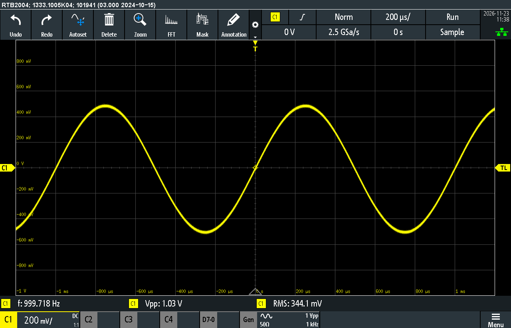
Follow-up questions are answered from the store. "Zoom into the first rising edge" becomes a window of the stored samples reduced to a few hundred rows; "list the frames with errors" becomes a filtered query. Nothing is measured twice unless the signal has changed.
03 · Measurements, spectra and Bode
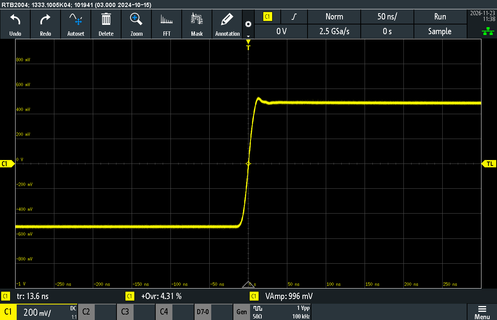
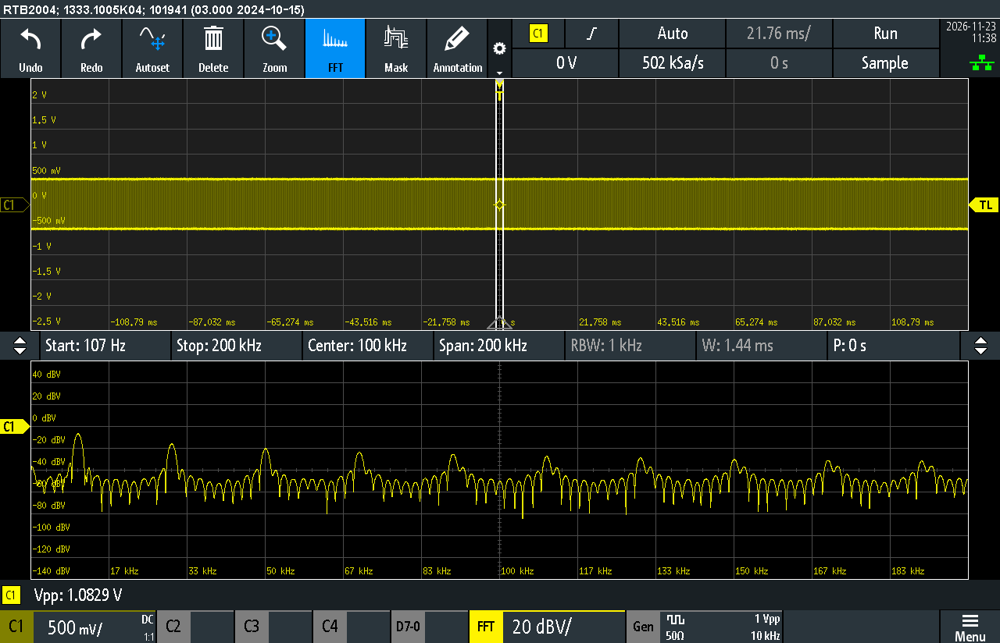
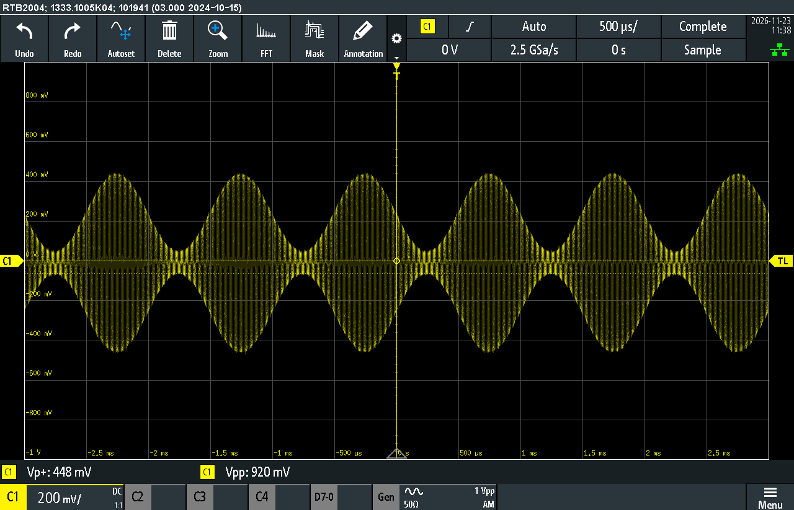
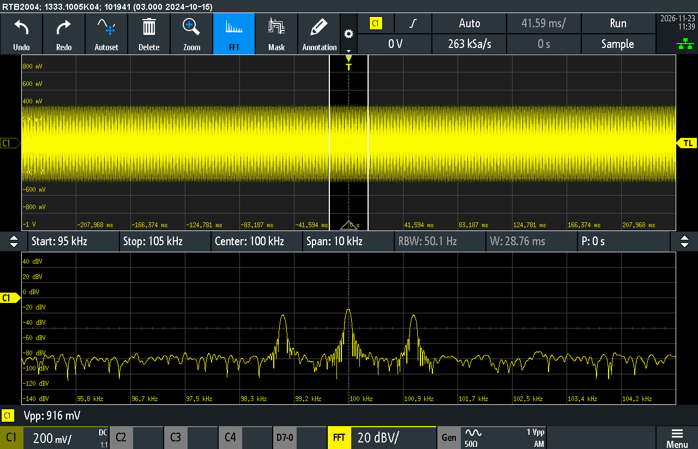
The FFT on the RTB2 couples span, resolution bandwidth, window and timebase, and changes them in steps. The spectrum tool repeats the requested range until it settles, then reports the resolution it got. For a modulated or keyed carrier, the agent computes the envelope from the stored samples: AM depth, rise and fall time of the keying, crest factor.
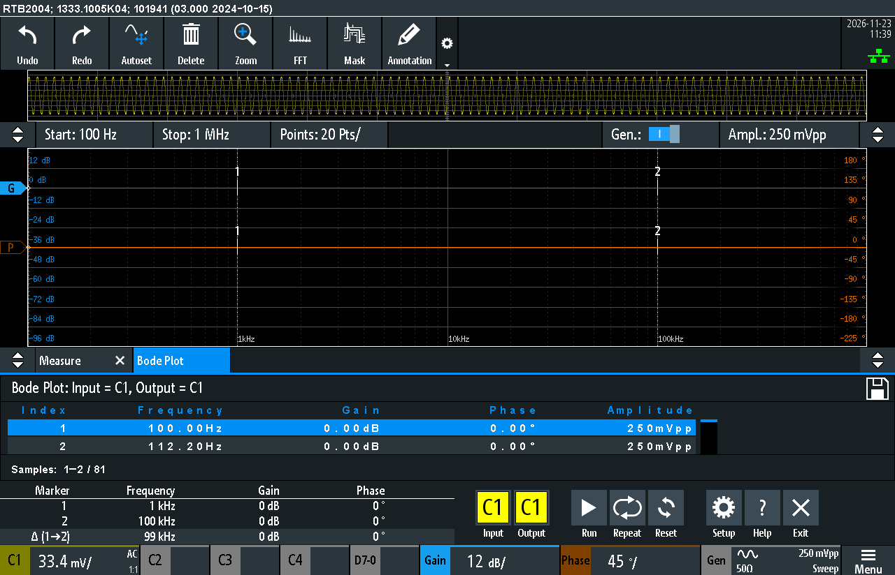
The Bode application changes the memory mode, the channel scale and coupling, and the generator load, and keeps those changes. The server saves the setup before every sweep and restores it when the scope leaves Bode mode.
04 · Buses and logic
With the logic probe and the decode options, the agent reads serial buses as data: every frame with its time, status, address and bytes. Given lines it does not know, it first identifies them from the edges alone, then confirms with the decoder.
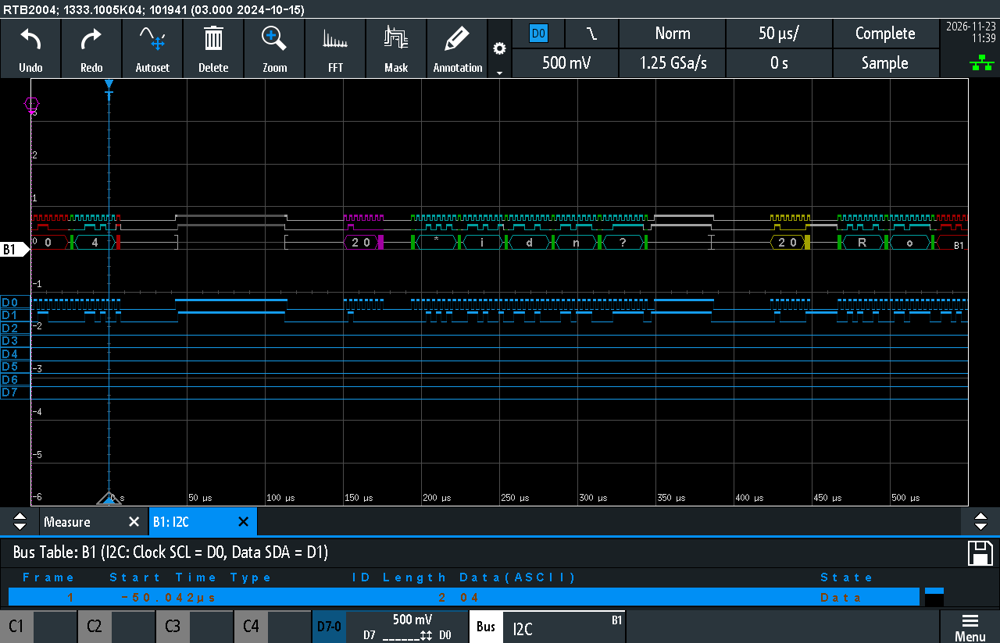
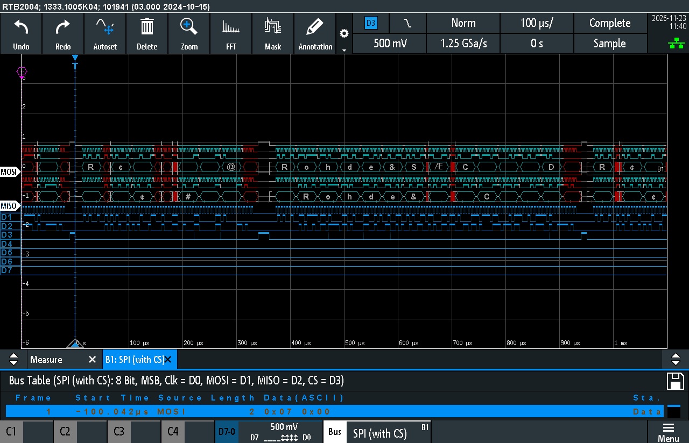
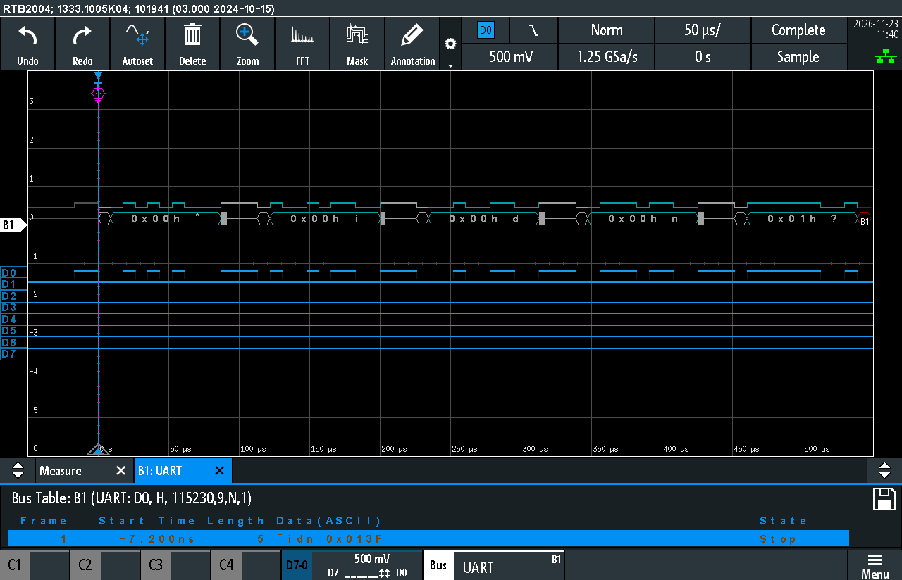
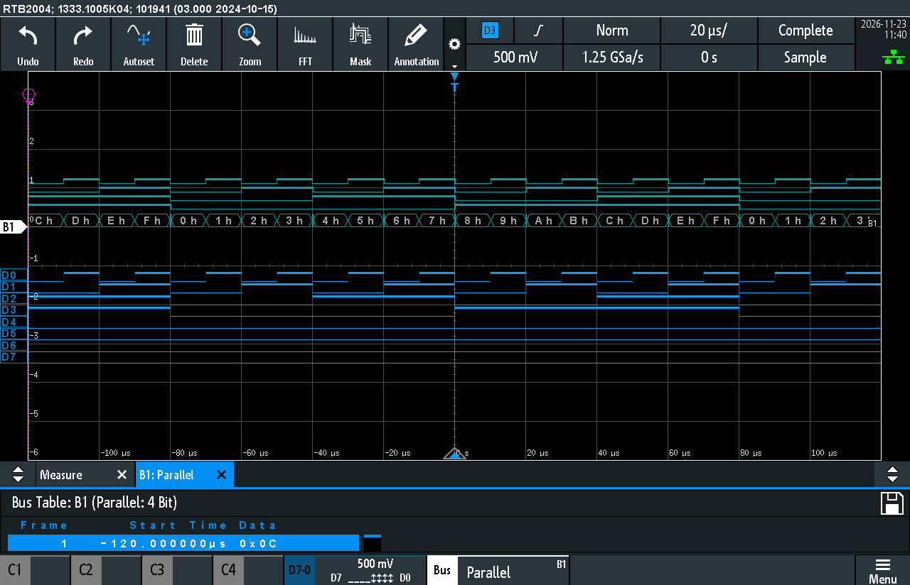
Identification works on the stored logic capture. A line with pulses at multiples of one bit time is a UART, and the agent reports the measured and the nearest standard baud rate and whether the line is inverted. A bursting clock with one data line, both idle high, is I2C. A clock with data lines and a line that holds its level while the clock runs is SPI, and that line is the chip select. A steady periodic line is a clock or PWM, flagged when it looks like a servo or ESC signal. On the bench, all four pattern-generator buses and a 50 Hz servo pulse were identified correctly, including from short records that started in the middle of a transfer.
A capture window cuts the first and the last transfer. The scope marks those frames incomplete, which is correct. When everything looks incomplete, widen the timebase before concluding that the bus is broken.
05 · Pass/fail and rare faults
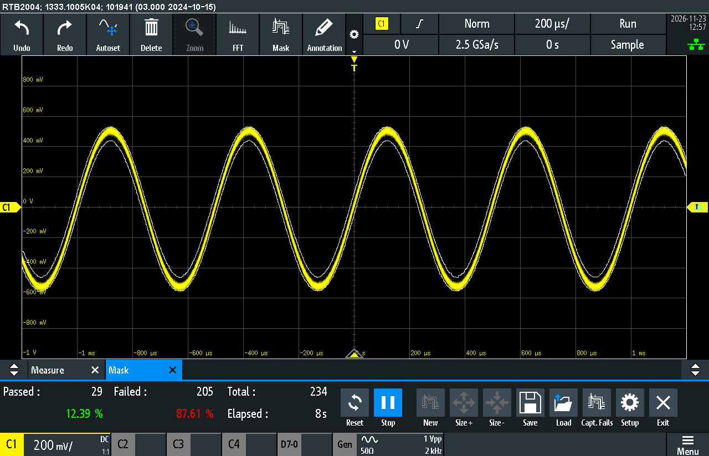
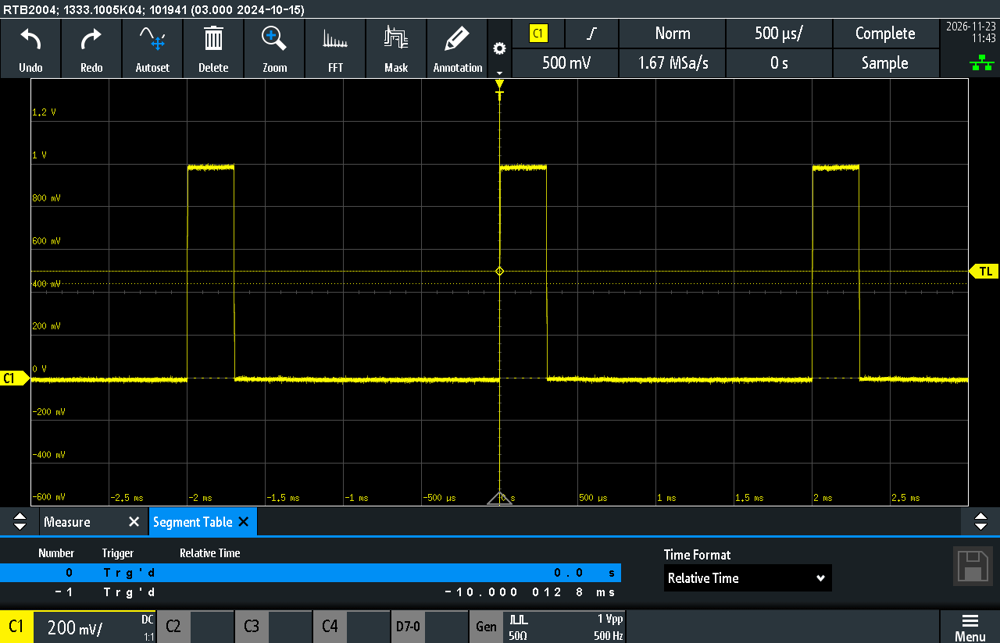
- Show the good signal and learn the mask with margins in divisions. The tool checks the new mask against the signal it was learned from and warns when it does not fit.
- Test. Thousands of acquisitions at about 16 per second; the result is tested, failed and the failure rate. With "keep failures", only failing acquisitions stay in segmented memory.
- Look at the failures. The history tool walks the stored segments and returns one row per segment: levels, frequency, decoded frames and their status.
The tool never learns a mask from the signal it is about to judge: a bad signal would define its own tolerance.
06 · The skills
The skills teach Claude how to work the bench with these tools. They are plain text you can read in the repository.
| Skill | What it brings |
|---|---|
| scope-operating | The discipline for every session: leave the scope as you found it, safety, capture then analyze, sample rate and trigger rules, what each error means, reporting with numbers. |
| ham-bench | Transmitter checks through attenuators (with the attenuation table from 5 W to 1500 W), AM depth, CW keying shape and key clicks, SSB two-tone and IMD, harmonics, filter Bode sweeps, audio levels for digital modes. |
| bus-reverse-engineering | Unknown pins: levels and threshold, survey, identify, confirm with the decoder, census of addresses and commands, recognizing common traffic (IMU and barometer addresses, SPI flash commands, NMEA, MAVLink, SBUS, CRSF, DShot). |
| embedded-bringup | Rails and ripple under load, power-up sequence and reset, clocks, PWM, servos and ESCs, sensor buses and I2C rise times, GPS, telemetry and RC links, intermittent faults, comparing board revisions. |
07 · Demo mode
The oscilloscope from the background of every science-fiction lab scene. Demo mode loops through scenes made by the scope's own generators, then restores your setup.
| Level | Wiring | Scenes |
|---|---|---|
| Analog | Aux Out, 50 ohm feed-through terminator, CH1 | Heartbeat monitor, signal in the noise, radar ping, AM, FM spectrum, harmonics, burst with zoom, pass/fail mask |
| Full | Analog wiring, plus pattern generator P0..P3 to logic probe D0..D3 (probe ground to the pattern generator's ground contact) | All of the above, plus I2C decoded to text, the SPI link, and a logic-analyzer counter |
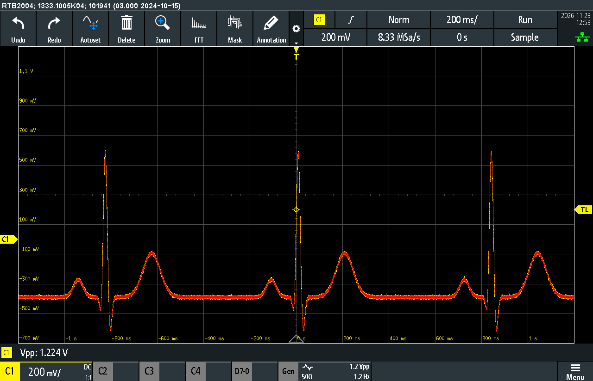
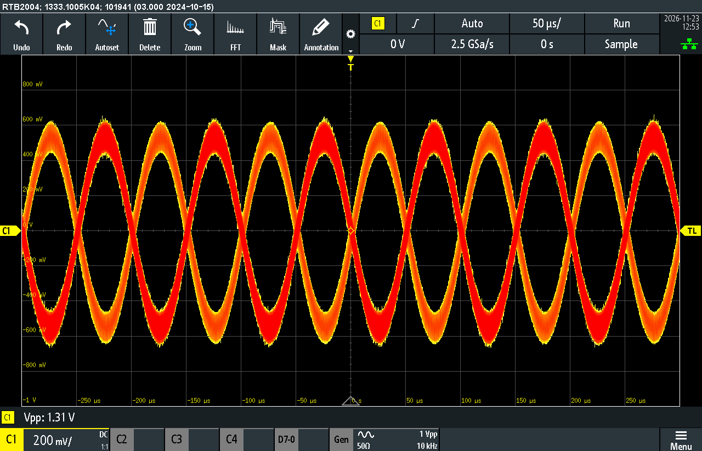
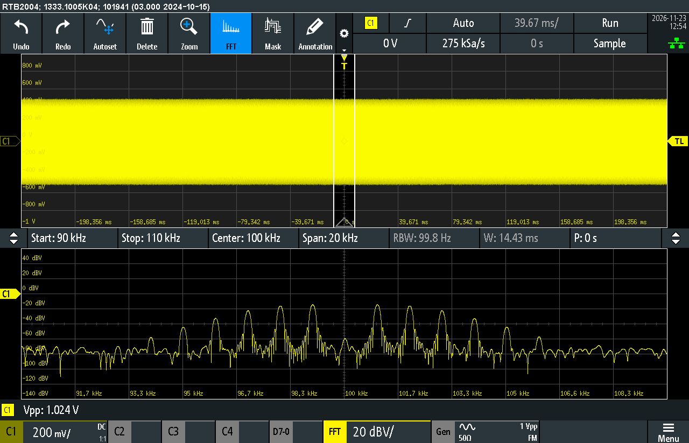
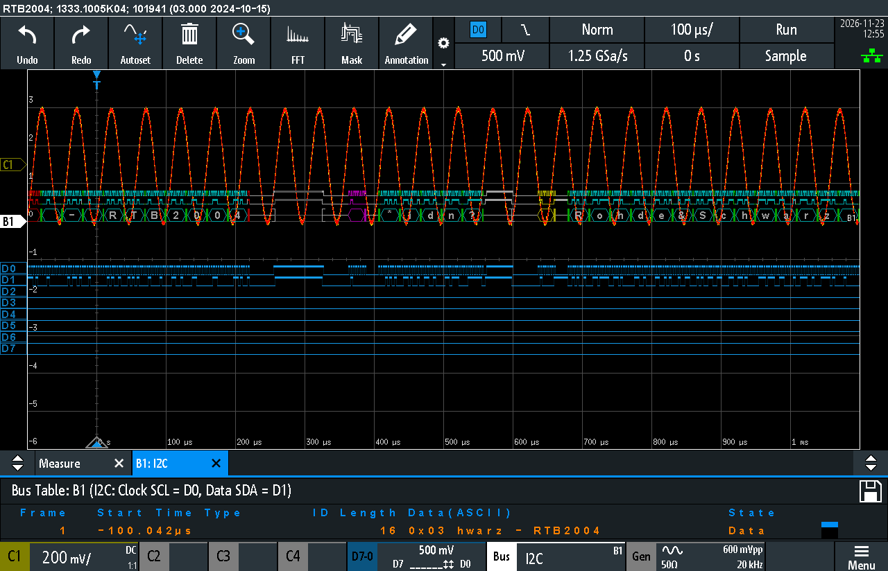
Say "Run the full demo, 15 seconds per scene", and "Stop the demo" to end it. From a terminal: rs-scope --host <ip> demo --level analog --loops 0 --yes.
It switches on the generator and, in the full demo, the pattern generator. It needs your confirmation and the wiring above. While it runs, other scope tools wait, because the scope serves one client at a time.
E · Worked sessions
These are the tool calls the agent makes and what came back, recorded on the RTB2004 during the acceptance run of version 0.1.2. Long results are shortened.
1 · "Something is talking on the logic probe. What is it?"
Why it worked. The survey showed two active lines. Identification needed nothing but their edges. The decoder confirmed the guess with frames that decode cleanly.
2 · "Measure the 1 kHz sine on CH1"
Why it worked. The load setting matched the terminator, so the amplitude is what was asked for. The measurement and the stored capture agree.
3 · "What is the modulation depth?"
4 · "Does this signal stay inside its tolerance?"
5 · "Check the Bode setup before the filter goes in"
F · When it does not answer
| Symptom | Likely cause and fix |
|---|---|
| The connector fails to start | Claude Desktop shows the error under Settings, Extensions. The log is ~/Library/Logs/Claude/mcp-server-R&S Oscilloscope (RTB2, RTB2000).log. |
| Connection times out | Another client holds the scope: its web page in a browser, a script, a running demo. Close it. Check the address on the scope's Ethernet page. |
| "validation" error | A wrong command or suffix. The agent searches the command set and tries the right one. |
| -113 Undefined header | The command does not exist in this firmware; the description says so where it is known. |
| -200 on a decode query | The bus is set to a different protocol. |
| -221 Settings conflict | Another application (FFT, Bode, XY, mask) is active. The task tools switch back on their own. |
| A measurement returns no value | Nothing to measure on this screen: check scale, timebase and trigger. |
| Everything decodes as incomplete | The window cuts the transfers: widen the timebase. |
| The mask warns after it was learned | The trigger or timebase is not stable. With noise on the signal, the trigger's high-frequency reject helps. |
G · Tool reference
| Tool | Main arguments |
|---|---|
| connection | action: status, connect, disconnect · host, port |
| session | action: start (with goal), current, list |
| setup | action: show, save, restore (guarded) · capture_id, note |
| capture | sources: CH1..CH4, POD1, POD2, BUS1, BUS2 · acquire: single, stop, current · points: MAX, DMAX, DEF · note · screenshot |
| data | action: sessions, captures, capture, series, edges, envelope, identify, frames, sql · capture_id, source, t_start, t_end, max_points, bus, status, address, contains, segment, offset, limit |
| measure | source · types (up to 8: FREQ, PER, PEAK, UPE, LPE, AMPL, MEAN, RMS, RTIM, FTIM, PDCY, NDCY, PPW, NPW, POV, NOV, DEL, PHAS and more) |
| spectrum | source · start_hz, stop_hz · window |
| bode | start_hz, stop_hz, points_per_decade, input_channel, output_channel · confirm |
| mask | action: create, test, status, off · source, x_margin_div, y_margin_div, acquisitions, keep_failed, stop_on_failures |
| history | action: info, harvest · sources, max_segments |
| demo | action: scenes, start, stop, status · level: analog, full · dwell_s, loops · confirm |
| screenshot | note |
| scpi | commands (one or a list) · confirm · wait |
| scpi_search · scpi_describe · scpi_block | query, limit · header, verbose · query, save_as |
The full command reference, with the bench notes for every command, is the RTB2 / RTB2000 SCPI API reference (PDF).
H · Commercial use
Free for hobbyists. Personal use, amateur radio, education and nonprofit use are free under the PolyForm Noncommercial License 1.0.0.
Commercial use needs a license. Any use by or for a business, including internal use on a company test bench, needs a commercial license. Support for more instruments, test procedures written as skills for your products, integration with your test setup, and support plans are available too. Contact Westlake Professionals.
I · About and provenance
| rs-scope-mcp | github.com/sbrunner-atx/rs-scope-mcp |
| Desktop connector | rs-scope-mcp.mcpb on GitHub Releases, listed on Downloads |
| Skills | skills/scope-operating · skills/ham-bench · skills/bus-reverse-engineering · skills/embedded-bringup |
| Bench record | docs/BENCH-NOTES.md (six rounds on the RTB2004) · scripts/acceptance_test.py (40 checks) |
| Command reference | docs/rs-scope-api.md and PDF |
| Sibling servers | serial-console-mcp · fldigi-mcp · wsjtx-mcp · n3fjp-mcp |
Corrections and additions are welcome. Open an issue on the repository.
This is private, personal work by Stefan Brunner, AE5VG. It is an independent project, not affiliated with or endorsed by Rohde & Schwarz; R&S and RTB2000 are trademarks of Rohde & Schwarz GmbH & Co. KG. GL es 73 de AE5VG sk.